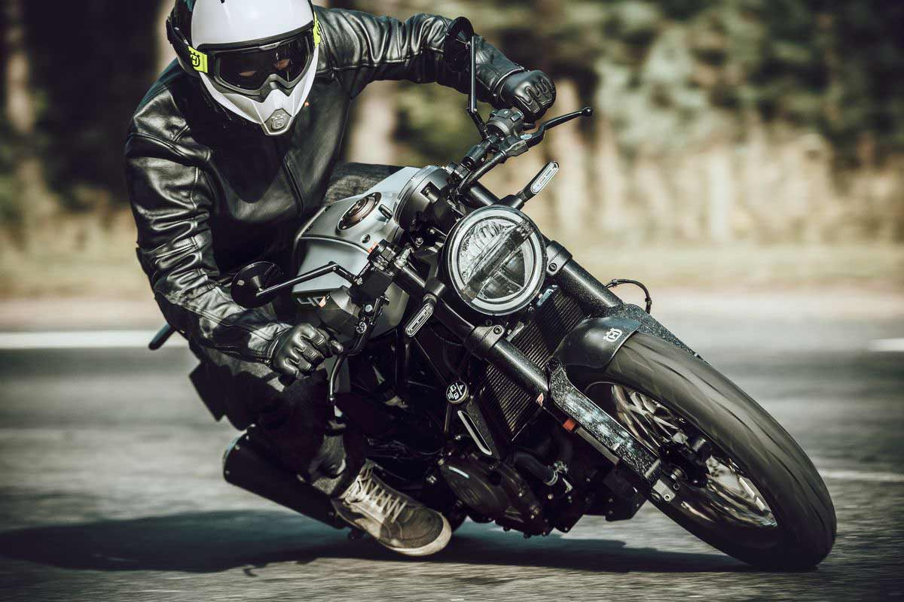

“La vida es como un paseo en moto, todo depende de tu forma de conducir”
“Quizás estás a solo un paseo en moto de estar de buen humor”

“Busqué mi libertad en todas partes y solo la encontré sobre mi motocicleta”

“El buen motero conoce la gran diferencia entre saber el camino y respetar el camino”
“Una moto y buena compañía, es la felicidad de cada día”
“La moto, es ese órgano que está fuera de mi cuerpo, que necesito para vivir”
“Cuando se tiene una moto, solo lamentamos los paseos que no dimos”